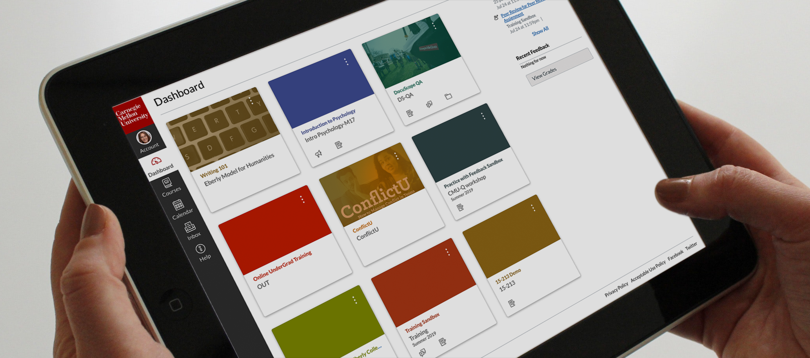

Over Canvas
Canvas is een online platform dat voornamelijk wordt gebruikt voor het beheren van leeromgevingen, zoals bij online onderwijs en e-learning. Het biedt docenten en studenten tools voor het organiseren van cursussen, het delen van lesmateriaal, het beoordelen van werk, en het communiceren binnen de leeromgeving. Canvas maakt het mogelijk om opdrachten in te dienen, toetsen af te leggen, en samen te werken met anderen, zowel synchroon als asynchroon. Het platform is gebruiksvriendelijk en biedt integraties met verschillende andere tools en applicaties.

- Toegang tot rooster en lesmateriaal: Studenten kunnen hun lesroosters inzien, studiemateriaal downloaden en belangrijke mededelingen ontvangen.
- Cijfers en beoordelingen: Studenten kunnen hun behaalde cijfers en beoordelingsresultaten bekijken, evenals feedback van docenten.
- Inschrijvingen en aanvragen: Het portaal biedt vaak de mogelijkheid om je in te schrijven voor cursussen, tentamens of andere academische activiteiten.
- Communicatie: Studenten kunnen communiceren met docenten, medestudenten en administratief personeel via berichten of forums.